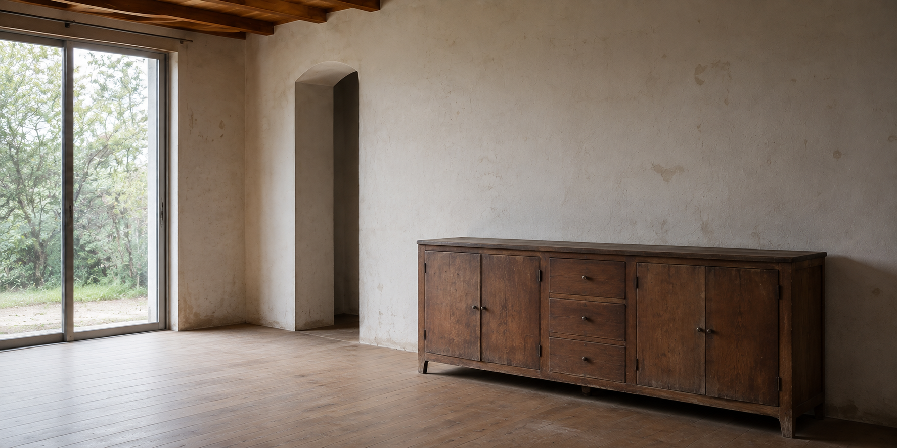

03 / PROJECT
自然光と素材の響きを整え、
音楽と日常が穏やかに共存する住空間。
- TYPE
- 住宅
- SCOPE
- 内装施工・木部仕上げ・音環境調整
- MATERIAL
- 木材・左官材・布

PROJECT STORY
依頼内容と提案依頼内容
日常の居心地を損なわず、音楽をゆっくり楽しめるリビングにしたいという相談を受け、素材の見え方と音の響きの両面から計画しました。
提案・施工
硬い面とやわらかな面のバランスを整え、音が一方向に偏らないよう家具や開口部との関係を調整しました。自然光が素材の陰影を穏やかに見せる仕上げを選んでいます。
スピーカーを置いたあとも生活動線が窮屈にならないよう、設置場所の周囲に適切な余白を確保しました。
BEFORE / AFTER
施工前と施工後
PROJECT SUMMARY
施工を終えてこの住まいでは、音楽を楽しむための機能だけを前面に出すのではなく、普段の暮らしの中に音が自然に居場所を持つことを大切にしました。まず、窓や壁、床など音を反射する面の位置を確認し、木部や布、左官仕上げの組み合わせによって響きが強くなりすぎないよう調整しています。スピーカーの設置位置は、座る場所からの距離だけでなく、通路や収納の使いやすさ、窓から入る光との関係も含めて検討しました。壁面は光を柔らかく受け止める落ち着いた質感に整え、木製収納との色差を抑えることで空間に奥行きをつくっています。昼間は自然光の中で静かに過ごせ、夜は照明を落として音楽に集中できるよう、時間帯による見え方にも配慮しました。音響設備を特別なものとして隔離せず、家具や植物、日用品と同じ風景の中になじませることで、聴くことと暮らすことが無理なくつながる住空間を目指しました。